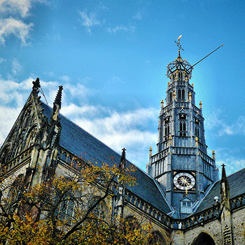
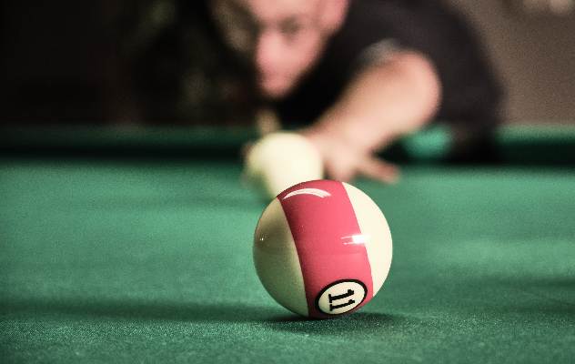

Haarlem is a lovely historical city, located on the river Spaarne at no more than 20 kilometres from Amsterdam. Haarlem boasts a magnificent old centre with plenty of monumental buildings. As the city was home to several first class Dutch painters, including Frans Hals, there is a lot of art to go around. And if you're into shopping, a day in Haarlem is a day well spent too, as it was best shopping city of the country several times.Haarlem's main sights are its lovely historic centre and its fine art museums. You will get a good idea of what the city has to offer by just wandering the streets in the centre for a while, as many monumental buildings and the most prominent museums are all there. The tourist information office can provide maps and walking routes as well as guides, if you don't want to miss anything.
SPORTS IN HAARLEM
TAEKWONDO - CAPOEIRA - KARATE - BILLARD - HOCKEY - TENNIS - AIKIDO
About Haarlem
About Haarlem Center
Haarlem-Center is a part of the city of Haarlem and coincides with the only neighborhood in this part of the city the Old City , which is popularly called simply "the City" . The district has 13,830 inhabitants and consists of five neighborhoods, including the historic city center and the Stationsbuurt , where the city's largest station is located. The Old City, surrounded by canals, is characterized by many old streets and monuments. At the heart of the city center lies the Grote Markt in the city center, which houses a number of special historic buildings, including the town hall , the Vleeshal and the Grote or St. Bavo church. The downtown skyline is dominated by this huge church with its almost 80 meter high tower. Many famous musicians, including Mozart, may have played in the world-famous Müller organ in the church. There is a market twice a week on the Grote Markt and various events take place throughout the year, including the annual fair. Important shopping streets run from Grote Markt in three directions, namely Grote Houtstraat , Barteljorisstraat and Zijlstraat . There are a number of small, characteristic shopping streets in the historic center, such as Warmoesstraat, Schagchelstraat and Kleine Houtstraat. The Spaarne River divides the city center into two parts. West of the river is the largest part of the city center. To the east the part that is also called the Spaarnwouderbuurt . In this part, among other things, the only remaining city gate of Haarlem is the Spaarnwouder or Amsterdamse Poort . The mill De Adriaan and Koepelgevangenis are also located here . Both banks of the Spaarne are connected by two monumental swing bridges, the Catharijnebrug and the Melkbrug and two drawbridges including the Gravestenenbrug, and a modern drawbridge. This bridge, popularly called the 'Verfroller', is officially called the Long Bridge. The neighborhood that lies between the Nieuwe Gracht and the station, the Stationsbuurt , was built in the second half of the 19th century. There are many large patrician houses along the Nieuwe Gracht. In the 60s and 70s of the 19th century the villas at the Kenaupark and the Ripperdapark and at the Bolwerken were built.

Sports Clubs in Haarlem
1 - Hwa-Rang Dragon
Hwa-grade Dragon has had its own training location since 2006. After two relocations, they have permanently established themselves since 2013 at Stresemannlaan 60 in Haarlem! 200 square meters of mat, training materials and mirrors for maximum enjoyment and development! Most lessons, seminars and other activities take place here.
2 - Biljartvereniging Velsen
The association is located at Wüstelaan 79 in Santpoort-Zuid, was founded in 1982 and is affiliated with the KNBB. It has around 60 members. There are set club evenings on Monday, Tuesday and Thursday plus set club afternoons on Tuesday and Thursday and Friday. 
3 - Karate Club Ryounkai
Ryounkai originated from Gensei Ryu. The latter style was founded in 1950 by Sensei Seiken Shukumine. A number of divestitures took place in the following period. One was Ryounkai, a karate style led by Sensei Norio Kayama. Sensei Kayama introduced a number of innovations in the old training method.
4 - Capoeira School Semente
Capoeira School Semente was founded by Contramestre Lisette in 2003 in Haarlem, and is therefore 16 years old. The struggle for physical and mental freedom is one of the foundations within Capoeira and therefore also within Capoeira School Semente.
5 - Holds Braef Standt Hockey Club
Founded on October 31, 1919, the first members played with 10 men, for lack of an eleventh member! They used the letters from their school for their club name. In 1928, HBS was approved Royal and HBS became a member of the Royal Dutch Hockey Association (KNHB). Now, 100 years later, HBS is a large and thriving association with 1,400 members, a beautiful complex with three artificial grass pitches and a very attractive clubhouse.
6 - TSTZ Haarlem
TSTZ Haarlem is the result of a merger of three table tennis associations from Haarlem, named TOGSPIN,
Te Zaanen and Haarlem. All three original associations are more than 50 years old. TSTZ Haarlem is one
of the largest table tennis associations in Haarlem and has both a senior citizen (from 18 to 80) and a
youth department. TSTZ Haarlem has its gaming room in the Badhuisstraat. This is in-house and is open
all week evenings, on Wednesday morning / afternoon and on Saturday.

7 - Aikido Haarlem
Aikido Haarlem, or previously Aikido Centrum Haarlem, offers Aikido classes on Monday evening at Lorenzkade 62 in Haarlem. The dojo is easily accessible for cyclists due to its location in the center of Haarlem. The dojo is also easily accessible by car, because it is on the Haarlem ring road and there are also many free parking spaces.
8 - Pim Mulier Tennis Club
Pim Mulier is a tennis and padel club for players of all levels. They welcome experienced and
non-experienced players. Tennis and padel are fun sports. You enjoy the outdoors and, in addition to
playing on the court, you will find a bit of fun in their Tie-Break Café.

9 - Olympia Haarlem
 Olympia Haarlem is a sports club
with multiple sports. They want to offer everyone a fun sport. You can also rent their canteen for your
party or meetings. Some of the sports they offer are football, baseball, softball, badminton, billiards,
darts and frisbee.
Olympia Haarlem is a sports club
with multiple sports. They want to offer everyone a fun sport. You can also rent their canteen for your
party or meetings. Some of the sports they offer are football, baseball, softball, badminton, billiards,
darts and frisbee.
10 - Sport Club HLC
Sports club HLC is an association in Haarlem and immediate surroundings where boys and girls can go for gymnastics, guppie gym & gymkids, dance, acrogym and circus. For adults, HLC has keepfit classes, yoga and recreational badminton for women.